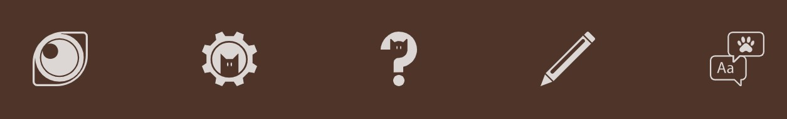
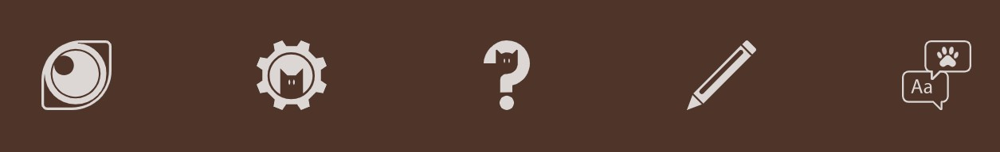

CSS Zen Garden
Role: Web Designer, Graphic Designer
Skills: Adobe Illustrator, CSS, HTML
The Design
Custom Graphics
I used Adobe Illustrator to custom make every graphic used in my design. I built a custom pattern of pawprints, coffee mugs, french presses, and coffee beans to use as the background for the whole page. Playful cat images peek around every corner of the site. The footer features custom icons for various links used on the site.
 

Layout
The biggest challenge of the CSS Zen Garden is to build your own layout using only CSS. This restriction led me to use pseudo-elements (::before and ::after) to position my cat images how I wanted them. I also used the CSS grid to position each section exactly where I wanted.
One of my favorite sections of this page is the chalkboard design I used as a "Menu" of other Zen Garden Designs. I used a combination of background colors and images to create a sandy chalkboard texture. The design is also responsive so that the cat appears next to the menu on desktops, and above the menu on smaller screens.

CSS Animation
The part I'm most proud of building is the animation right when the page loads. I made a graphic to look like the awning of a storefront, as well as a "welcome" sign graphic. When the page loads, the awning descends into its spot at the top of the page, followed by the welcome sign descending into place and rocking back and forth until it settles in. I built this with a combination of pseudo classes on the header, keyframe animations, and transitions.
Responsive Design
Creating a fully responsive layout was the most challenging part of this project for me. Positioning every image exactly how I wanted was a finicky process of adjusting media queries and the percentages of sizes and spacing. It was especially difficult to get the cat sleeping on the bottom border of the header to stay positioned there, as if it were sleeping on a ledge, at every screen size. The rest of the page was more or less much simpler, and just required rearranging grids at different media queries.
Conclusion
Having just completed my first CSS class before tackling this project, the CSS Zen Garden project was an exciting creative challenge for my new skills! Completing this challenge definitely solidified my grasp on CSS concepts and gave me a firm foundation of design skills to build upon in the future.